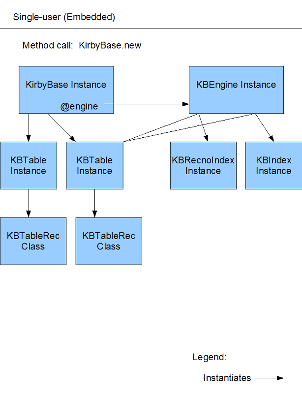
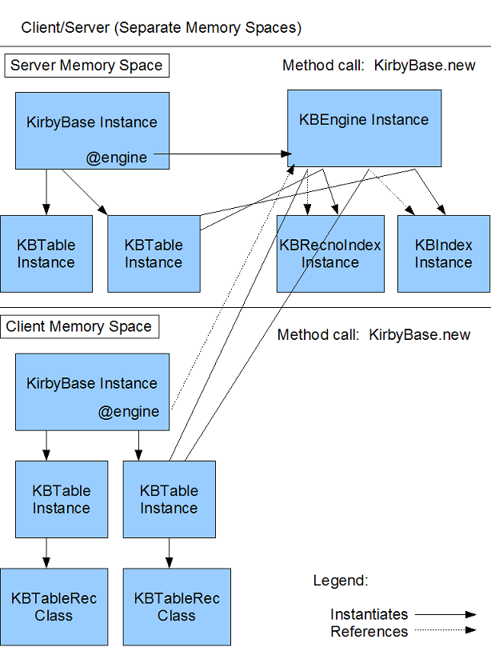

Figure: Kirby, pictured here in attack mode.
Table of Contents
Introduction
KirbyBase is a simple, pure-Ruby, flat-file database management system.
Some of its features include:
-
Since KirbyBase is written in Ruby, it runs anywhere that Ruby runs. It
is easy to distribute, since the entire DBMS is in one (approx. 100k) code
file.
-
All data is kept in plain-text, delimited files that can be edited by
hand. This gives you the ability to make changes by just opening the file
up in a text editor, or you can use another programming language to read the
file in and do things with it.
-
It can be used as an embedded database or in a client/server, multi-user
mode. To switch from one mode to the other, you only have to change one
line in your program. Included in the distribution is a sample database
server script using DRb.
-
Tables are kept on disk during use and accessed from disk when selecting,
updating, inserting, and deleting records. Changes to a table are written
immediately to disk. KirbyBase is not an "in-memory" database. Once you
update the database in your program, you can be assured that the change has
been saved to disk. The chance of lost data due to power interruptions, or
disk crashes is much reduced. Also, since the entire database does not have
to reside in memory at once, KirbyBase should run adequately on a
memory-constrained system.
-
You can specify the type of data that each field will hold. The available
data types are: String, Integer, Float, Boolean, Time, Date, DateTime, Memo,
Blob, and YAML.
-
The query syntax is very "rubyish". Instead of having to use another
language like SQL, you can express your query using Ruby code blocks.
-
All inserted records have an auto-incrementing primary key that is
guaranteed to uniquely identify the record throughout its lifetime.
-
You can specify that the result set be sorted on multiple fields, each
one either ascending or descending.
-
You can specify that certain fields be indexed. Using an index in a select
query can greatly improve performance on large tables (I've seen 10x speed
improvements). Index maintenance is completely handled by KirbyBase.
-
You can specify that a field has a "lookup table". Whenever that field is
accessed, the corresponding record from the lookup table is automatically
available.
-
You can specify one-to-many links between tables, somewhat analogous to a
"join" in SQL.
-
You can create calculated fields that are computed at runtime.
-
It is fairly fast, comparing favorably to SQLite.
In meeting your DBMS needs, KirbyBase fits in somewhere between plain
text files and small SQL database management systems like SQLite and
MySQL.
Connecting to a database
To use Kirbybase, you first need to require the module:
Then create an instance:
By default, the instance is a local connection using the same memory space
as your application. To specify a client/server connection, it would look
like this:
db = KirbyBase.new(:client, 'localhost', 44444)
Of course, you would substitute your server's ip address and port number.
To specify a different location (other than the current directory) for the
database files, you need to pass the location as an argument, like so:
db = KirbyBase.new(:local, nil, nil, './data')
KirbyBase treats every file in the specified directory that has the proper
extension as a database table. The default extension is ".tbl". To specify
a different extension, pass this as an argument, like so:
db = KirbyBase.new(:local, nil, nil, './', '.dat')
To specify a different location other than the current directory for any
memo/blob files, you need to pass the location as an argument, like so:
db = KirbyBase.new(:local, nil, nil, './', '.tbl', './memos')
If you don't want KirbyBase to spend time initially creating all of the
indexes for the tables in the database, you can pass true as the
delay_index_creation argument:
db = KirbyBase.new(:local, nil, nil, './', '.tbl', './', true)
KirbyBase will skip initial index creation and will create a table's
indexes when the table is first referenced.
You can also specify the arguments via a code block. So, if you don't want
to have to specify a bunch of arguments just to get to the one you want,
put it in a code block attached to the method call. You could re-code the
previous example like so:
db = KirbyBase.new { |d| d.delay_index_creation = true }
Creating a new table
To create a new table, you specify the table name, and a name and type for
each column. For example, to create a table containing information on World
War II planes:
plane_tbl = db.create_table(:plane, :name, :String, :country, :String,
:role, :String, :speed, :Integer, :range, :Integer, :began_service, :Date,
:still_flying, :Boolean)
Turning on encryption
You can also specify whether the table should be encrypted. This will save
the table to disk encrypted (more like obfuscated) using a Vignere Cipher.
This is similar to rot13, but it uses a key to determine character
substitution. Still, this encryption will only stymie the most casual
of hackers. Do not rely on it to keep sensitive data safe! You specify
encryption by using a code block attached to #create_table:
plane_tbl = db.create_table(:plane, :name, :String...) do |t|
t.encrypt = true
end
Specifying a custom record class
You can also specify that you want records of the table to be returned to
you as instances of a class. To do this, simply define a class before you
call #create_table. This class needs to have an accessor for each fieldname
in the table.
If this class has a class method, called #kb_create, KirbyBase, when
creating each record of the result set, will call that method and pass it
the field values of the result record. #kb_create will need to handle
creating an instance of the record class itself.
Here is an example of #kb_create in action:
class Foobar
attr_accessor(:recno, :name, :country, :role, :speed, :range,
:began_service, :still_flying, :alpha, :beta)
def Foobar.kb_create(recno, name, country, role, speed, range,
began_service, still_flying)
name ||= 'No Name!'
speed ||= 0
began_service ||= Date.today
Foobar.new do |x|
x.recno = recno
x.name = name
x.country = country
x.role = role
x.speed = speed
x.range = range
x.began_service = began_service
x.still_flying = still_flying
end
end
def initialize(&block)
instance_eval(&block)
end
end
Pass this class to #create_table in an attached code block, like so:
plane_tbl = db.create_table(:plane, :name, :String...) do |t|
t.record_class = Foobar
end
Now, when you call #select, the result set will be made up of instances of
Foobar, instead of the default, which is instances of Struct. This also
works the other way. You can now specify instances of Foobar as input to
the #insert, #update and #set methods. More on those methods below.
If the custom record class does not respond to #kb_create, KirbyBase will
call the class's #new method instead, passing it all of the field values.
Specifying Advanced Field Type Information
There are four types of advanced field type information that you can
specify:
Defaults, Requireds, Indexes and Extras (i.e. Lookup, Link_many,
Calculated).
Default Field Values
Normally, when you insert a record, if you don't specify a value for a field
or specify nil as the value, KirbyBase stores this as an empty string
(i.e. "") in the table's physical file, and returns it as a nil value when
you do a #select.
However, you can tell KirbyBase that you want a column to have a default
value. Only KBTable#insert is affected by default values. Default values
do not apply to updating a record. So, for inserts, there are two cases
where a default value, if one is specified, will be applied: (1) if nil
is specified for a field's value, and (2) if no value is specified for a
field.
For example, to specify that the category column has a default value, you
would code:
db.create_table(:addressbook, :firstname, :String,
:lastname, :String, :phone_no, :String,
:category, {:DataType=>:String, :Default=>'Business'})
Notice that, since we are specifying advanced field type information, we
cannot just simply say :String for the second half of the field definition.
Instead, we have to pass a hash, with a :DataType item set to :String.
Next, because we are specifying a default value, we have to include a hash
item called :Default with its value set to whatever we want the default to
be. The default value must be of a type that is valid for the column.
Required Fields
Normally, when you insert or update a record, if you don't specify a value
for a field or specify nil as the value, KirbyBase stores this as an empty
string (i.e. "") in the table's physical file, and returns it as a nil
value when you do a #select.
However, you can tell KirbyBase that you want a column to be required
(i.e. you must supply a value and it can't be nil). When a record is
inserted or updated, an exception will be raised for any required field
that has not been given a value or been given a nil value.
For example, to specify that the category column is required, you would
code:
db.create_table(:addressbook, :firstname, :String,
:lastname, :String, :phone_no, :String,
:category, {:DataType=>:String, :Required=>true})
Notice that, since we are specifying advanced field type information, we
cannot just simply say :String for the second half of the field definition.
Instead, we have to pass a hash, with a :DataType item set to :String.
Next, because we are specifying that a column is required, we have to
include a hash item called :Required with its value set to true.
Indexes
Indexes are in-memory arrays that have an entry that corresponds to each
table record, but just holds the field values specified when the index was
created, plus the :recno of the actual table record. Because index arrays
are smaller than the actual table and because they are in-memory instead of
on-disk, using an index in a select query is usually much faster than
selecting against the table itself, especially when the table is quite
large.
To specify that an index is to be created, you need to tell KirbyBase which
fields are to be included in a particular index. You can have up to 5
indexes per table. Indexes can either contain single or multiple fields.
For example, to create an index on firstname and lastname for a table called
:addressbook, you would code:
db.create_table(:addressbook, :firstname, {:DataType=>:String, :Index=>1},
:lastname, {:DataType=>:String, :Index=>1},
:phone_no, :String)
Notice that, since we are specifying advanced field type information, we
cannot just simply say :String for the second half of the field definition.
Instead, we have to pass a hash, with a :DataType item set to :String.
Next, because we are creating an index, we have to include a hash item
called :Index with its value set from 1 to 5. For compound indexes, like
the one in the above example, we need to make sure that all fields in the
index have the same number. To have another index for a table, just make
sure you increment the index number. So, for example, if we wanted to have
another index for the :addressbook table on the field phone number, we would
code:
db.create_table(:addressbook, :firstname, {:DataType=>:String, :Index=>1},
:lastname, {:DataType=>:String, :Index=>1},
:phone_no, {:DataType=>:String, :Index=>2})
Notice how we just increment the index number to 2 for the :phone_no index.
Since there are no other fields with the same index number, this will create
an index with just the :phone_no field in it. You will see how to use
indexes in your select queries later.
Lookup Fields
Lookup fields are fields that hold a reference to a record in another table.
For example, say you have a table called :department that has fields called
:dept_id, :dept_name, and :manager. Now, let's say that you don't want the
:manager field to just hold the manager's name; you want it to point to the
manager's record in the :employee table, which has fields like
:employee_id, :firstname, :lastname, :ss_no, etc. What you want to do is
to tell KirbyBase that the :dept.manager field should actually point to the
manager's record in the :employee table (the "lookup" table). Here's how
you would do that:
db.create_table(:department, :dept_id, :String, :dept_name, :String,
:manager, {:DataType=>:String, :Lookup=>[:employee, :employee_id]})
Ok, what we have done here is to tell KirbyBase a little bit "extra" about
the :manager field. We are specifying that whenever we ask for the value of
:manager, we want KirbyBase to do a #select against the :employee table that
compares the value of the :department.manager field to the value of the
:employee.employee_id field. If an index is available for the
:employee.employee_id field, KirbyBase will automatically use it.
There is a shortcut to specifying a lookup field. If the :employee_id field
has been designated a "key" field for the :employee table, we can even
shorten our code and KirbyBase will figure it all out. For example, if the
:employee table was created with this code:
db.create_table(:employee, :employee_id, {:DataType=>:String, :Key=>true},
:firstname, :String, :lastname, :String)
Then the field definition for :manager could be re-written as:
db.create_table(:department, :dept_id, :String, :dept_name, :String,
:manager, :employee)
KirbyBase will figure out that you want to compare :department.manager to
:employee.employee_id.
Link_many Fields
When you specify that a field has a Link_many, you are telling KirbyBase
that you want to create a one-to-many link between this field and a subset
of records from another table.
For example, say you are creating an order entry system for your business.
You have a master table called :orders that holds one record for each
customer order that is placed. It has fields like: :order_id, :cust_id,
:order_date, etc.
Now, you also need a table that is going to have a record for each detail
item type ordered. Let's call it :order_items and some of its fields would
be: :item_no, :qty, :order_id.
Notice that the detail table has a field called :order_id. This will hold
the order_id linking it back to the :orders.order_id table. If a customer
order's only one type of item, then there will only be one record in the
:order_items table that has that order_id. But, if the customer places an
order for many different types of items, there will be many records in the
:order_items table that have the same order_id. That's why we say that
there is a "one to many" link between the master (or parent) table, :orders,
and the detail (or child) table, :order_items.
When we select an :order record, we want the ability to also select all the
detail records from the :order_items table that belong to that order. We do
this by telling KirbyBase about the one-to-many link between the two
tables. Here's how:
db.create_table(:orders, :order_id, :Integer, :cust_id, :Integer,
:order_date, :Date, :items, {:DataType=>:ResultSet, :Link_many=>[:order_id,
:order_items, :order_id]})
db.create_table(:order_items, :item_no, :Integer, :qty, :Integer,
:order_id, :Integer)
Now, look at the :Link_many item in the field type definition hash in the
above example. We are specifying that a field, called :items, be created
with a field type of :ResultSet. We tell KirbyBase that, when we ask for
the value of :items, it should do a #select on :order_items and return a
KBResultSet that contains :order_items whose :order_id field (the last item
in the array above), equals the value of the :orders.order_id field (the
first item of the array above).
If you opened up the :orders table file in a text editor, you would notice
that, for each record, the :items field is blank. No data is ever stored in
this field, since its value is always computed at runtime.
Calculated Fields
When you specify that a field is a Calculated field, you are telling
KirbyBase to compute the value of the field at runtime, based on the code
string that you pass it at table creation time.
For example. let's say you have a table that is going to track your
purchases. It will have fields like :purchase_date, :description, :qty, and
:price.
Let's say that you want to have a "virtual" field, called :total_cost, that
is the result of quantity multiplied by price. You want this field
calculated at runtime, so that if you change a record's quantity or price,
the :total_cost field will automatically reflect the changes.
Here's how you would define this table:
db.create_table(:purchases, :purchase_date, :Date, :description, :String,
:qty, :Integer, :price, :Float, :total_cost, {:DataType=>:Float,
:Calculated=>'qty*price'})
See how we tell KirbyBase how to calculate the field? By multiplying the
:qty field by the :price field.
If you opened up the :purchases file in a text editor, you would notice
that, for each record, the :total_cost field is blank. No data is ever
stored in this field, since its value is always computed at runtime.
Obtaining a reference to an existing table
If a table already exists and you need to get a reference to it so that you
can insert, select, etc., you would call the #get_table method from your
KirbyBase instance. This is how to obtain a handle to an existing table.
You cannot call KBTable#new directly.
plane_tbl_another_reference = db.get_table(:plane)
Then, you can use it just like you would use a reference you got when
you created a new table.
The insert method
To insert records into a table, you use the insert method. You can use an
array, a hash, a struct, a code block, or an instance of the table's custom
record class to specify the insert values.
Insert a record using an array for the input values:
plane_tbl.insert('FW-190', 'Germany', 'Fighter', 399, 499,
Date.new(1942,12,1), false)
The length of the data array must equal the number of columns in the table,
not including the :recno column. Also, the data types must match. In the
above example, specifying "399", instead of 399, would have resulted in an
error.
Insert a record using a hash for the input values:
plane_tbl.insert(:name='P-51', :country='USA', :role='Fighter', :speed=403,
:range=1201, :began_service=Date.new(1943,6,24), :still_flying=true)
Insert a record using a Struct for the input values:
InputRec = Struct.new(:name, :country, :role, :speed, :range,
:began_service, :still_flying)
rec = InputRec.new('P-47', 'USA', 'Fighter', 365, 888, Date.new(1943,3,12),
false)
plane_tbl.insert(rec)
Insert a record using a code block for the input values:
plane_tbl.insert do |r|
r.name = 'B-17'
r.country = 'USA'
r.role = 'Bomber'
r.speed = 315
r.range = 1400
r.began_service = Date.new(1937, 5, 1)
r.still_flying = true
end
Insert a record using an instance of the table's custom record class:
foo = Foobar.new do |x|
x.name = 'Spitfire'
x.country = 'Great Britain'
x.role = 'Fighter'
x.speed = 333
x.range = 454
x.began_service = Date.new(1936, 1, 1)
x.still_flying = true
x.alpha = "This variable won't be stored in KirbyBase."
x.beta = 'Neither will this one.'
end
plane_tbl.insert(foo)
How to select records
The syntax you use to select records to perform operations on is the same
for a select, update, or delete statement, so I wanted to cover, in
general, how to create a query expression first, before getting to the
specifics of select, update, and delete.
In KirbyBase, query conditions are specified simply by using Ruby code
blocks. Therefore, any code block that can be converted into a Proc object
is valid. This allows for great flexibility, as you will see in the many
examples below.
Now that we have a general understanding of how to select records to operate
on, lets get more specific by looking at the select, update, and delete
methods.
The select method
The select method allows you to ask for all records in a table that match
certain selection criteria. Additionally, you can also specify which fields
you want included in the result set. The select method returns an instance
of KBResultSet, which is an array of records that satisfied the select
criteria. KBResultSet is covered in more detail later in the manual.
Here is the simplest example of a select statement:
result_set = plane_tbl.select
Since, no code block was specified, KirbyBase will include all records in
the result set. Additionally, because a list of fields to include in the
result set was not specified, KirbyBase will include all fields for each
record in the result set.
To specify that you only want a subset of fields in the result set, you list
their field names as arguments to the select method. For example:
result_set = plane_tbl.select(:name, :speed)
To specify selection criteria, attach a code block to the select method
call. For example, if you only wanted to select Japanese planes:
result_set = plane_tbl.select(:name, :speed) { |r| r.country == 'Japan' }
You can combine multiple expressions in the code block. For example, to
select only US planes that have a speed greater than 350mph:
result_set = plane_tbl.select { |r| r.country == 'USA' and r.speed > 350 }
You can use regular expressions in the code block. Let's select all Axis
fighters:
result_set = plane_tbl.select do |r|
r.country =~ /Germany|Japan/ and r.role == 'Fighter'
end
Selecting by index
Performing a select query using an index is almost identical to performing a
regular select query. You just have to specify the particular select
method, based on the index you wish to use.
For example, say you have created an index on the :speed field of the
:plane table. You want to search for all planes with a speed greater than
400 mph. Ruby automatically creates select methods for each one of the
indexes of a table. So, you would code your select query like this:
plane_tbl.select_by_speed_index { |r| r.speed > 400 }
Notice that you simply insert the name of the field as part of the method
name. Its as simple as that.
For compound indexes, you just need to specify the
indexed field names in the select method in the same order as they are in
the table. So, let's say you have indexed the :plane table on :country and
:role, in one index. To select on this compound index, you would code:
plane_tbl.select_by_country_role_index do |r|
r.country == 'Germany' and r.role == 'Fighter' }
end
Notice how you just list both fields as part of the name of the select
method, separated by underscores.
Selecting by :recno index
For each table, a :recno index is automatically created, whether or not
other indexes are explicitly created by you. You can alway use this index
to select records based solely on :recno. For example:
plane_tbl.select_by_recno_index { |r| [3, 45, 152].include?(r.recno) }
Selects Involving Lookups or Link_manys
Selects that involve Lookup fields or Link_many fields have a special case
because both field types return complex objects rather than simple data
types. For example, consider the lookup field example that I described
earlier. For reference, here are the two table defintions again:
department_tbl = db.create_table(:department, :dept_id, :String,
:dept_name, :String, :manager, {:DataType=>:String, :Lookup=>[:employee,
:employee_id]})
employee_tbl = db.create_table(:employee, :employee_id, {:DataType=>:String,
:Key=>true}, :firstname, :String, :lastname, :String)
To find the department managed by John Doe, the select query would look like
this:
department_tbl.select do |r|
r.manager.firstname == 'John' and r.manager.lastname == 'Doe'
end
Notice how the manager attribute is itself a Struct with its own members.
To print out all departments including the manager's full name:
department_tbl.select.each do |r|
puts 'Department: %s Manager: %s %s' % [r.dept_name,
r.manager.firstname, r.manager.lastname]
end
Selects involving Link_many fields are slightly different because they
involve ResultSets instead of just single objects. Here's the table
definitions from the earlier Link_many discussion:
orders_tbl = db.create_table(:orders, :order_id, :Integer,
:cust_id, :Integer, :order_date, :Date, :items, {:DataType=>:ResultSet,
:Link_many=>[:order_id, :order_items, :order_id]})
order_items_tbl = db.create_table(:order_items, :item_no, :Integer,
:qty, :Integer, :order_id, :Integer)
To print an order and all of its associated detail items:
result = order_tbl.select { |r| r.order_id == 501 }.first
puts '%d %d %s' % [result.order_id, result.cust_id, result.order_date]
result.items.each { |item| puts '%d %d' % [item.item_no, item.qty] }
Notice how the items attribute in the ResultSet is itself a ResultSet
containing all of the :order_items records that belong to the selected
order.
A Note About nil Values
Beginning in version 2.6 of KirbyBase, nil values are no longer stored as
the singleton instance of NilClass in the database. Now, they are stored
as references to the singleton instance, kb_nil, of KBNilClass. KBNilClass
is as similar to NilClass as possible, but since NilClass cannot
be sub-classed, there are a few minor differences.
However, this should all be transparent to you because KirbyBase converts
kb_nil values to Ruby nil values before returning the results of a query.
The only time you will need to be worried about kb_nil is when you need to
explicitly test for a nil value in a query. For example:
plane_tbl.select {|r| r.speed == kb_nil}
which is the same as:
plane_tbl.select {|r| r.speed.kb_nil?}
Notice how it is very similar to how you would test for nil?
The only other difference you will now notice, is if you open up a table in
a text editor. Now, nil values are stored as "kb_nil", instead of being
stored as an empty string (i.e. ""). This has the added advantage that
KirbyBase can now distinguish between empty strings and nil values. In the
past, if you saved an empty string as a field value, the next time you
selected that record, KirbyBase would return that field's value as nil.
The main reason for making this change was to eliminate the need to
override NilClass#method_missing, which was cause for concern for some
users.
KBResultSet
As stated above, the select method returns an instance of KBResultSet, which
is an array of Struct objects (or instances of the class specified in
record_class), each one representing a record that satisfied the selection
criteria.
Since each item in KBResultSet is a Struct object, you can easily reference
its members using field names. So, to print the name and speed of each
German plane in the table you would code:
plane_tbl.select(:name, :speed) { |r| r.country == 'German' }.each do |r|
puts '%s %s' % [r.name, r.speed]
end
Sorting a result set
You can specify sort criteria by calling KBResultSet#sort. You must supply
the sort method with a list of field names that you want to sort by. For
example, to select all planes, include just name, country, and speed in the
result set, and sort the result set by country (ascending) then name
(ascending), you would code:
result = plane_tbl.select(:name, :country, :speed).sort(:country, :name)
To indicate that you want a particular field sorted in descending order
rather than ascending order, you need to put a minus sign in front of it.
For example, to select all planes, include just name, country, and speed in
the result set, and sort the result set by country (ascending) then speed
(descending), you would code:
result_set = plane_tbl.select(:name, :country, :speed).sort(:country,
-:speed)
You can also explicitly specify that a field be sorted in ascending order by
putting a plus sign in front of it. This is not necessary, since ascending
is the default, but its there if you prefer to use it.
Producing a report from a result set
Additionally, you can also transform the KBResultSet into a nicely formatted
report, suitable for printing, by calling KBResultSet#to_report. To print
a formatted report of all plane names, countries, and speeds, sorted by
name, you would code the following:
puts plane_tbl.select(:name, :country, :speed).sort(:name).to_report
CrossTabs or Pivot Tables or Column Arrays (i.e. I don't know what to call them!)
Every KBResultSet has an additional feature that can prove quite useful.
When a result set is created, KirbyBase creates an array for each column
name that has all of the values of that column in it. Perhaps an example
would make this more clear. Let's say you have a table that looks like
this:
|
name
|
speed
|
range
|
|
P-51
|
402
|
1201
|
|
ME-109
|
354
|
544
|
|
Spitfire
|
343
|
501
|
If you do a select on the table, not only will the result set contain a
row for each record that satisfied the select condition, but it will also
contain an array for each column, which will hold all the column values.
Here's an example, using the above mentioned table:
result = plane_tbl.select
puts result[0].name => P-51
puts result[0].speed => 402
p result.speed => [402,354,343]
Notice how you can reference this "column array" by calling the column name
as a method. KirbyBase returns an array that holds all the values, in this
case, of the speed column. This can be very useful in some cases. For a
good example of this, look in the examples\crosstab_test directory of the
distribution.
How to update records
You can update the data in a table either by using the KBTable#update method
by itself, or using it in conjunction with the KBResultSet#set method.
Both methods produce the same result. The main difference is that, while
using the #update method by itself, you can use a Hash, Array, or Struct as
your update criteria, using the #set method in conjunction with the #update
method adds the ability to use a code block as your update criteria. You
will see specific examples of this in "The update method" description below.
The update method
To update a table, you use the update method. You must specify a code
block that indicates which records are to be updated. Additionally, you must
specify the fields to be updated and the new values for those fields.
You can update records using a Hash, Struct, an Array, or an instance of a
class you defined. For example, to change the P-51's speed to 405mph and
its range to 1210 miles, you could code:
plane_tbl.update(:speed=>405, :range=>1210) { |r| r.name == 'P-51' }
or:
UpdateRec = Struct.new(:name, :country, :role, :speed, :range,
:began_service, :still_flying)
rec = UpdateRec.new
rec.speed = 405
rec.range = 1210
plane_tbl.update(rec) { |r| r.name == 'P-51' }
The set method
You can also update records using a code block, via KBResultSet#set:
plane_tbl.update {|r| r.name == 'P-51'}.set do |r|
r.speed = 405
r.range = 1210
end
You can also update records using a Hash, Struct, or an Array, via
KBResultSet#set:
plane_tbl.update {|r| r.name == 'P-51'}.set(:speed=>405, :range=>1210)
The update_all method
To update all records in a table, you can use KBTable#update_all. This
works just like the update method, except that you don't specify a code
block containing selection criteria.
For example, to add 50 mph to every record's speed field, you would code:
plane_tbl.update_all { |r| r.speed = r.speed + 50 }
How to delete records
Deleting records from a table is similar to performing a #select or an
#update.
The delete method
To use the #delete method, you must supply a code block that identifies
which records should be deleted.
For example, to delete the FW-190's record from the table:
plane_tbl.delete { |r| r.name == 'FW-190' }
The clear (alias delete_all) method
To completely empty a table, use the clear method. For example:
The pack method
When KirbyBase deletes a record, it really just fills the entire line in the
file with spaces. Deleting the entire line and moving each subsequent line
up one would take too much time. Also, when a record is updated, if the size
of the updated record is greater than the size of the old record, KirbyBase
spaces out that entire line in the file, and rewrites the updated record at
the end of the file. Again, this is done so that the entire file doesn't
have to be re-written just because one record got updated.
However, this means that after a lot of deletes and updates, a table can
have lots of blank lines in it. This slows down searches and makes the file
bigger than it has to be. You can use the pack method to remove these blank
lines:

|
You can only call this method when connect_type==:local. |
Memo and Blob Fields
Memo and Blob fields operate a little differently from standard field types.
You specify their creation just like regular field types. Notice how you
can specify a base path for where memo/blob files will be stored.
db.create_table(:plane, :name, :String, :speed, :Integer, :descr,
:Memo) do |d|
d.memo_blob_path = './memos'
end
However, what you actually store in the Memo field upon an #insert is an
instance of KBMemo. KBMemo has two attributes: :filepath and :contents.
The first holds the path (including filename) to the text file that will
hold the contents of the memo. This path will be relative to whatever
path was specified as the memo_blob_path upon database initialization. Here
is an example of how to do this:
memo_string = <<END_OF_STRING
The FW-190 was a World War II German fighter. It was used primarily as an
interceptor against Allied strategic bombers.
END_OF_STRING
memo = KBMemo.new(db, 'FW-190.txt', memo_string)
plane_tbl.insert('FW-190', 'Germany', 399, 499, memo)
Updates work similarly in that you would need to supply a KBMemo instance
to the #update method for the :Memo field.
Other than this difference, you can use a memo field just like a regular
field. When you do a #select, KirbyBase goes out to the file that holds the
memo data, reads in all the lines, and returns a KBMemo instance. Here is
an example of how you can even query against a memo field:
plane_tbl.select { |r| r.descr.contents =~ /built in Detroit, Michigan/ }
And KirbyBase would select all records whose memo field contained the phrase
"built in Detroit, Michigan".
Blob fields work similarly, except that instead of doing a #readlines,
KirbyBase opens the file in binary mode and reads in the whole file at once.
Miscellaneous KirbyBase methods
Miscellaneous KBTable methods
Special characters in data
Since KirbyBase tables are just plain-text, newline-delimited files with
each field delimited by a |, certain ASCII characters could cause problems
when used as input. For example, entering a newline character (\n on Unix,
\r\n on Windows) as part of a record's data would cause problems later when
KirbyBase attempted to read this record. Likewise, using the | character
in your data would also cause problems as KirbyBase uses this character as a
field delimiter. Finally, it turns out that Python has problems handling
octal code \032 under Windows (possibly because it equates to Ctrl-Z), so
to keep compatibility between the Ruby and Python versions of KirbyBase,
this issue needs to be handled.
To handle the above special characters as data input, KirbyBase checks all
:String and :YAML input data and replaces the special characters with
encodings that are safe. The following table shows how replacements are
done:
|
Input Character
|
KirbyBase Replacement
|
|
\n
|
&linefeed;
|
|
\r
|
&carriage_return;
|
|
\032
|
&substitute;
|
|
|
|
&pipe;
|
|
&
|
&
|
KirbyBase will translate to and from the special characters as data is
written to and read from a table. It should all be transparent to the user.
The only time you would encounter the replacement words is if you were to
open up the physical table file in a text editor or read it in as input
outside of KirbyBase.
Table Structure
Every table in KirbyBase is represented by a physical, newline-delimited
text-file. Here is an example:
000006|000000|Struct|recno:Integer|name:String|country:String|speed:Integer
1|P-51|USA|403
2|P-51|USA|365
3|Sptitfire|England|345
4|Oscar|Japan|361
5|ME-109|Germany|366
6|Zero|Japan|377
The first line is the header rec. Each field is delimited by a "|". The
first field in the header is the record counter. It is incremented by
KirbyBase to create new record numbers when records are inserted.
The second field in the header is the deleted-records counter. Every time a
line in the file is blanked-out (see The pack method), this
number is incremented. You can use this field in a maintenance script so
that the table is packed whenever the deleted-records counter reaches, say,
5,000 records.
The third field in the header is the record_class field. If you specified a
class when you created the table, its name will show up here and records
returned from a #select will be instances of this class. The default is
"Struct".
The fourth field in the header is the :recno field. This field is
automatically added to the table when it is created. The field name and
field type are separated by a ":".
The rest of the fields are whatever you specified when you created the
table.
If there is a Z in the first position of the header rec and the rest of the
file is a bunch of random characters, this means that the table is
encrypted.
Each record after the header record is simply a line of text. Newline
characters delimit records.
Server Notes
There is a server script included in the distribution called kbserver.rb.
This script uses DRb to turn KirbyBase into a client/server, multi-user
DBMS. This DBMS server handles table locking for you so you don't have to
worry about it.
Tips on improving performance
Beware of Date/DateTime
Converting a String (the format in which data is stored in a KirbyBase
table) to a Date/DateTime is slow. If you have a large table with a
Date/DateTime field, this can result in long query times.
To get around this, you can specify the field type as a :String, instead of
a :Date/:DateTime. Queries will still work correctly, because Date/DateTime
fields that are in String format sort the same way they would if they were
in native format. Here's an example. The following two expressions will
result in the same result set being returned:
date_field <= Date.new(2005, 05, 11)
and
date_field_stored_as_string_field <= "2005-05-11"
Create indexes on large tables
The larger a table becomes, the more sense it makes to create an index on
one or more of its fields. Even though you take a hit when KirbyBase first
initializes because it has to create the index arrays, you make up for it
after that in greatly improved query speeds. I have noticed speed-ups of
as much as 10x on large tables.
Create indexes on foreign keys
If you have a Link_many on a table field, you might want to think about
creating an index on the field in the child table that is being linked to.
When performing a one-to-many link, KirbyBase will automatically take
advantage of an index on the link field in the child table.
By the way, the same holds true for Lookups.
When possible, always search by :recno
This might be a no-brainer, but, if you have the chance to select by
:recno, use the built-in #select_by_recno_index method (or the #[] method).
This is even faster than selecting on a regularly indexed field, because the
:recno index that KirbyBase creates for each table is actually a Hash, not
an Array like all of the regular indexes. So selects are even faster.
Single-user memory space diagram

Figure: Single-user (embedded) mode.
Client/Server memory space diagram

Figure: Client/Server (separate memory spaces) mode.
License
KirbyBase is distributed under the same license terms as Ruby.
Credits

|
This manual was produced using the awesome text document formatter,
AsciiDoc. |